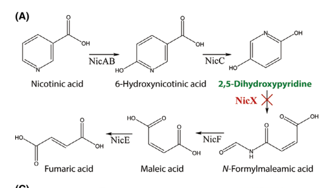

nicX (PP_3945; UniProt Q88FY1) encodes the Fe(II)-dependent 2,5-dihydroxypyridine 5,6-dioxygenase (EC 1.13.11.9) of the aerobic nicotinate (nicotinic acid) degradation pathway in Pseudomonas putida KT2440. It catalyzes the dioxygenolytic ring-cleavage step, converting 2,5-dihydroxypyridine (2,5-DHP) between carbons 5 and 6 to N-formylmaleamic acid, downstream of the NicC monooxygenase (which forms 2,5-DHP from 6-hydroxynicotinate) and upstream of NicD/NicF/NicE, which funnel the product through maleamate/maleate to fumarate. NicX is an extradiol-type ring-cleavage dioxygenase proposed as the founding member of a new family, with a 2-His-1-carboxylate (H265/H318/D320) non-heme Fe(II) site. It is a soluble (inferred cytosolic) enzyme; disruption of nicX abolishes growth on nicotinic acid as sole carbon source and causes accumulation of green, fluorescent 2,5-DHP.
| GO Term | Evidence | Action | Reason |
|---|---|---|---|
|
GO:0047075
2,5-dihydroxypyridine 5,6-dioxygenase activity
|
IEA
GO_REF:0000120 |
ACCEPT |
Summary: This automated EC/Rhea-derived annotation matches the characterized NicX molecular function.
Reason: UniProt and experimental GOA support the exact 2,5-dihydroxypyridine 5,6-dioxygenase activity, which is corroborated by purified-enzyme characterization in the falcon deep-research synthesis.
Supporting Evidence:
file:PSEPK/nicX/nicX-uniprot.txt
Reaction=2,5-dihydroxypyridine + O2 = N-formylmaleamate
file:PSEPK/nicX/nicX-goa.tsv
GO:0047075 2,5-dihydroxypyridine 5,6-dioxygenase activity
file:PSEPK/nicX/nicX-deep-research-falcon.md
catalyzes **dioxygenolytic cleavage** of **2,5-dihydroxypyridine (2,5-DHP)**, yielding **N-formylmaleamic acid (NFM)** as the product of ring opening
|
|
GO:1901848
nicotinate catabolic process
|
IDA
PMID:18678916 Deciphering the genetic determinants for aerobic nicotinic a... |
ACCEPT |
Summary: Nicotinate catabolic process is the correct pathway annotation for NicX.
Reason: NicX performs the unique ring-cleavage step in the characterized aerobic nicotinate degradation pathway, and its disruption abolishes growth on nicotinic acid as sole carbon source.
Supporting Evidence:
file:PSEPK/nicX/nicX-uniprot.txt
aerobic nicotinate degradation pathway
file:PSEPK/nicX/nicX-goa.tsv
GO:1901848 nicotinate catabolic process
PMID:18678916
Fe(2+)-dependent dioxygenase (NicX) converts 2,5-dihydroxypyridine into
file:PSEPK/nicX/nicX-deep-research-falcon.md
**disruption of nicX prevents growth on nicotinic acid as the sole carbon source**, supporting that NicX is essential for aerobic NA catabolism under those conditions
|
|
GO:0047075
2,5-dihydroxypyridine 5,6-dioxygenase activity
|
IDA
PMID:18678916 Deciphering the genetic determinants for aerobic nicotinic a... |
ACCEPT |
Summary: The experimental annotation captures the specific NicX molecular function.
Reason: NicX catalyzes dioxygenolytic cleavage of 2,5-dihydroxypyridine to N-formylmaleamic acid, with strict substrate specificity for 2,5-DHP demonstrated on purified enzyme.
Supporting Evidence:
file:PSEPK/nicX/nicX-uniprot.txt
dihydroxypyridine between carbons 5 and 6 generating N-formylmaleamate
file:PSEPK/nicX/nicX-uniprot.txt
Reaction=2,5-dihydroxypyridine + O2 = N-formylmaleamate
file:PSEPK/nicX/nicX-goa.tsv
PMID:18678916
file:PSEPK/nicX/nicX-deep-research-falcon.md
**Strict substrate specificity for 2,5-DHP** (within the tested panel)
|
Q: What structural features distinguish the NicX dioxygenase family from other extradiol ring-cleavage dioxygenases?
Q: Should NicX additionally carry a ferrous iron binding annotation (GO:0008198) given the modeled 2-His-1-carboxylate site (H265/H318/D320) and the demonstrated Fe(II)-dependent reactivation, rather than only the keyword-derived GO:0046872 metal ion binding?
Experiment: Compare wild-type and metal-binding-site mutant (H265/H318/D320) NicX enzymes for 2,5-dihydroxypyridine cleavage and iron dependence.
Type: enzyme kinetics and metal-dependence assay
The research report should be a detailed narrative explaining the function, biological processes, and localization of the gene product. Citations should be given for all claims.
You should prioritize authoritative reviews and primary scientific literature when conducting research. You can supplement
this with annotations you find in gene/protein databases, but these can be outdated or inaccurate.
We are specifically interested in the primary function of the gene - for enzymes, what reaction is catalyzed, and what is the substrate specificity? For transporters, what is the substrate? For structural proteins or adapters, what is the broader structural role? For signaling molecules, what is the role in the pathway.
We are interested in where in or outside the cell the gene product carries out its function.
We are also interested in the signaling or biochemical pathways in which the gene functions. We are less interested in broad pleiotropic effects, except where these elucidate the precise role.
Include evidence where possible. We are interested in both experimental evidence as well as inference from structure, evolution, or bioinformatic analysis. Precise studies should be prioritized over high-throughput, where available.
Scope & identity verification. This report concerns Pseudomonas putida strain KT2440 (PSEPK) nicX (PP_3945; UniProt Q88FY1), annotated as 2,5-dihydroxypyridine 5,6-dioxygenase (EC 1.13.11.9). In the KT2440 nicotinic-acid (nicotinate; NA) catabolic gene cluster, NicX catalyzes the ring-opening step converting 2,5-dihydroxypyridine (2,5-DHP) to N-formylmaleamic acid (NFM). This mapping is explicitly stated in KT2440-focused primary literature and matches the UniProt identity provided (jimenez2008decipheringthegenetic pages 1-2, xiao2018finrregulatesexpression pages 3-4, jimenez2008decipheringthegenetic pages 4-5).
NicX is an Fe(II)-dependent extradiol-type ring-cleavage dioxygenase that catalyzes dioxygenolytic cleavage of 2,5-dihydroxypyridine (2,5-DHP), yielding N-formylmaleamic acid (NFM) as the product of ring opening (jimenez2008decipheringthegenetic pages 4-5). The reaction is positioned in the aerobic “maleamate pathway” for NA degradation: NA is converted to 6-hydroxynicotinate (6HNA), then to 2,5-DHP, which is then opened by NicX to NFM before downstream conversion to fumarate (jimenez2008decipheringthegenetic pages 1-2, xiao2018finrregulatesexpression pages 3-4).
A central current concept emerging from the KT2440 characterization is that NicX is evolutionarily unusual among ring-cleaving dioxygenases: it was proposed as the founding member of a new family of extradiol ring-cleavage dioxygenases with an active-site architecture inferred from modeling, rather than sequence similarity to classical extradiol dioxygenases (jimenez2008decipheringthegenetic pages 1-2, jimenez2008decipheringthegenetic pages 4-5).
Experimental purification and metal analyses show NicX requires Fe2+ for activity. Purified NicX initially lacked detectable metal but became active after Fe2+-dependent reactivation, at which point approximately ~1 mol Fe per mol monomer was detected (jimenez2008decipheringthegenetic pages 4-5). Structural modeling identified a canonical 2-His-1-carboxylate motif with putative ligands H265, H318, and D320, consistent with non-heme Fe(II)-dependent extradiol dioxygenases (jimenez2008decipheringthegenetic pages 4-5).
In KT2440, nic genes are organized as a cluster designated nicTPFEDCXRAB (jimenez2008decipheringthegenetic pages 1-2). Within this pathway:
- NicC converts 6HNA → 2,5-DHP (xiao2018finrregulatesexpression pages 3-4, jimenez2008decipheringthegenetic pages 3-4).
- NicX converts 2,5-DHP → NFM (ring cleavage) (xiao2018finrregulatesexpression pages 3-4, jimenez2008decipheringthegenetic pages 4-5).
- Downstream steps convert NFM through maleamate/maleate intermediates to fumarate, integrating into central metabolism (brickman2018thebordetellabronchiseptica pages 4-4, jimenez2008decipheringthegenetic pages 1-2).
In KT2440, disruption of nicX prevents growth on nicotinic acid as the sole carbon source, supporting that NicX is essential for aerobic NA catabolism under those conditions (jimenez2008decipheringthegenetic pages 1-2). This aligns with NicX being the unique ring-cleavage step in the pathway (jimenez2008decipheringthegenetic pages 1-2).
Jiménez et al. expressed nicX in E. coli, purified the protein (~39 kDa by SDS-PAGE), and demonstrated dioxygenase activity in extracts (jimenez2008decipheringthegenetic pages 4-5). The ring-cleavage product was identified as N-formylmaleamic acid (NFM) using NMR and mass spectrometry, resolving earlier ambiguity in the literature about whether the dioxygenase produced NFM vs. downstream hydrolysis products (jimenez2008decipheringthegenetic pages 4-5). NicX catalysis consumes ~1 mol O2 per mol 2,5-DHP, consistent with dioxygenolytic ring cleavage (jimenez2008decipheringthegenetic pages 6-6).
Reported kinetic parameters for purified NicX include:
- K\u2098 ~ 70 \u03bcM for 2,5-DHP
- V\u2098\u2090\u2093 ~ 2.3 \u03bcmol min\u207b\u00b9 mg\u207b\u00b9
- Strict substrate specificity for 2,5-DHP (within the tested panel) (jimenez2008decipheringthegenetic pages 4-5).
Within the KT2440 nic cluster, nicX is part of NA-inducible operons, and one regulatory study specifically notes nicXR is transcribed from the P\u2093 promoter (xiao2018finrregulatesexpression pages 3-4).
A KT2440-focused regulatory study showed that:
- FinR (a LysR-type regulator) acts as a positive regulator of nicC and nicX operons.
- NicR is a repressor of the nic genes, with induction by NA/6HNA.
- FinR deletion reduces induction of nicC/nicX by NA/6HNA, and FinR and NicR each bind nicX and nicC promoter regions directly (xiao2018finrregulatesexpression pages 1-2, xiao2018finrregulatesexpression pages 2-3).
Direct localization experiments (e.g., microscopy, fractionation with markers) were not identified in the retrieved KT2440 primary literature for NicX. However, NicX was purified from soluble extracts and acts on the intracellular intermediate 2,5-DHP, supporting the interpretation that NicX functions as a soluble intracellular (cytosolic) enzyme (inference; strongest direct support is soluble purification/activity) (jimenez2008decipheringthegenetic pages 4-5).
A 2024 genome-engineering toolkit paper used nicX in P. putida as a functional target in cytidine/adenine base editing workflows. Key reported implementation details include nicotinic acid supplementation at 5 mM, growth in LB at 30°C with shaking (200 rpm), and use of base editors to introduce premature stop codons (functional knockouts) and then revert those edits using adenine base editors (kozaeva2024thepablo· pages 2-3).
A 2023 systematic review of nicotine-related bacterial metabolism describes 2,5-DHP 5,6-dioxygenase (EC 1.13.11.9; often called Hpo in nicotine pathways) as an Fe(II)-dependent ring-opening enzyme acting on 2,5-DHP and funneling metabolites through N-formylmaleamic acid to maleamate/maleate and ultimately fumarate feeding into the Krebs/TCA cycle (boiangiu2023insightsintopharmacological pages 11-14). While this review centers on nicotine catabolism (not specifically KT2440 nicotinate catabolism), the enzymatic role and EC assignment are directly consistent with KT2440 NicX biochemical function (jimenez2008decipheringthegenetic pages 4-5, boiangiu2023insightsintopharmacological pages 11-14).
Limitations on 2023–2024 nicX-specific mechanistic advances. In the retrieved corpus, 2023–2024 sources primarily contribute (i) engineering implementation (base editing) and (ii) review-level consolidation of nicotine pathway steps; new KT2440 NicX structures or new kinetic/mechanistic dissection specific to Q88FY1 were not found in the available full text retrieved here.
In P. putida KT2440, interrupting nicX causes accumulation of 2,5-DHP and yields a distinctive green-to-brown pigmented phenotype, described as a dark green, fluorescent compound that can be observed inside and outside the cells and can autoxidize to brown polymers (wirth2020acceleratedgenomeengineering pages 9-10). This phenotype was exploited as a practical screening readout in genome-engineering demonstrations: mutant colonies were readily identified on LB agar supplemented with 5 mM nicotinic acid (wirth2020acceleratedgenomeengineering pages 10-11).
Figure evidence for the pathway step and phenotype is available from Wirth et al. (2020): the pathway schematic highlights the blockage at NicX and the plate image shows the pigmented colonies used for selection/screening (wirth2020acceleratedgenomeengineering media 60f6f149, wirth2020acceleratedgenomeengineering media b386a739).
In the same genome engineering demonstration, the fraction of mutant colonies after recombination resolution was reported to be approximately ~50% (53%, 46%, 48%) across different plasmid/vector setups (wirth2020acceleratedgenomeengineering pages 10-11).
The KT2440 nic cluster was framed as a “model system” for degradation of N-heterocyclic aromatic compounds, with potential relevance to environmental detoxification and biotransformations that proceed through 6HNA and 2,5-DHP intermediates (jimenez2008decipheringthegenetic pages 1-2). Cross-species work on nicotine degradation (reviewed in 2023) positions the EC 1.13.11.9 ring-opening step as a key junction to channel heteroaromatic metabolites toward central metabolism (boiangiu2023insightsintopharmacological pages 11-14).
For functional annotation of UniProt Q88FY1 / PP_3945 / nicX in P. putida KT2440, the most defensible primary-function statement is:
2,5-dihydroxypyridine 5,6-dioxygenase (EC 1.13.11.9), Fe(II)-dependent extradiol ring-cleavage enzyme in nicotinic-acid (nicotinate) catabolism; catalyzes dioxygenolytic cleavage of 2,5-dihydroxypyridine to N-formylmaleamic acid. (jimenez2008decipheringthegenetic pages 4-5, xiao2018finrregulatesexpression pages 3-4)
| Feature | Summary |
|---|---|
| Gene/protein identity | nicX = PP_3945 = UniProt Q88FY1 in Pseudomonas putida KT2440; encoded in the nicTPFEDCXRAB nicotinic-acid catabolic cluster and annotated as 2,5-dihydroxypyridine 5,6-dioxygenase (EC 1.13.11.9) (jimenez2008decipheringthegenetic pages 1-2) |
| Enzymatic function | NicX catalyzes dioxygenolytic ring cleavage of 2,5-dihydroxypyridine (2,5-DHP) between C5 and C6 to yield N-formylmaleamic acid (NFM); this is the ring-opening step after NicC forms 2,5-DHP from 6-hydroxynicotinic acid in aerobic nicotinate degradation (jimenez2008decipheringthegenetic pages 4-5, jimenez2008decipheringthegenetic pages 1-2) |
| Substrate specificity | Reported to have strict substrate specificity for 2,5-DHP in the biochemical characterization; no broader substrate activity was indicated in the cited KT2440 study (jimenez2008decipheringthegenetic pages 4-5) |
| Cofactor / metal dependence | NicX is a Fe²⁺-dependent dioxygenase. Purified enzyme initially lacked detectable metal but could be reactivated with Fe²⁺; ICP detected about 1 mol Fe per mol monomer after reactivation. Modeling supports a canonical 2-His-1-carboxylate metal-binding motif with putative residues H265, H318, D320 (jimenez2008decipheringthegenetic pages 4-5) |
| Activation conditions | Reactivation of purified NicX was achieved using 10 mM DTT + 0.5 mM FeSO₄; one cited excerpt also notes Fe²⁺-dependent reactivation at 25 μM Fe²⁺ in biochemical workup (jimenez2008decipheringthegenetic pages 6-6, jimenez2008decipheringthegenetic pages 4-5) |
| Key kinetic parameters | Reported biochemical parameters for purified NicX: Km ≈ 70 μM, Vmax ≈ 2.3 μmol min⁻¹ mg⁻¹, and 1 mol O₂ consumed per mol 2,5-DHP (jimenez2008decipheringthegenetic pages 4-5) |
| Genetic evidence | ΔnicX mutants lacked 2,5-DHP dioxygenase activity, and disruption of nicX abolished growth of KT2440 on nicotinic acid as sole carbon source, demonstrating NicX is essential for aerobic nicotinate utilization (jimenez2008decipheringthegenetic pages 1-2, jimenez2008decipheringthegenetic pages 4-5) |
| Operon / genomic context | nicX lies within the nic cluster and is part of an NA-inducible nicX operon; one study states nicXR is transcribed from the Px promoter (xiao2018finrregulatesexpression pages 3-4, jimenez2008decipheringthegenetic pages 1-2) |
| Regulation | FinR positively regulates the nicX and nicC operons; NicR acts as a repressor, and both regulators bind the nicX promoter region directly. Deleting finR reduced nicX expression and impaired growth on NA/6HNA, while complementation restored expression/growth (xiao2018finrregulatesexpression pages 3-4, xiao2018finrregulatesexpression pages 1-2, xiao2018finrregulatesexpression pages 2-3) |
| Applied / engineering phenotype | Deleting nicX causes accumulation of 2,5-DHP, producing a dark green, fluorescent compound that appears inside and outside cells and can autoxidize into brown polymers; colonies become green-to-brown pigmented, enabling visual identification of mutants (wirth2020acceleratedgenomeengineering pages 10-11, wirth2020acceleratedgenomeengineering pages 9-10, wirth2020acceleratedgenomeengineering media 60f6f149) |
| Engineering implementation details | In genome-engineering demonstrations, ΔnicX mutants were screened on LB agar + 5 mM nicotinic acid; mutant fraction after recombination resolution was reported as ~50% (53%, 46%, 48% with different vectors) (wirth2020acceleratedgenomeengineering pages 10-11, wirth2020acceleratedgenomeengineering media 60f6f149) |
| 2024 base-editing use | In 2024 base-editing workflows in P. putida, nicX was used as a functional target for premature-stop-codon editing with PAM-relaxed cytidine base editors, with nicotinic acid supplementation at 5 mM; cultures were grown in LB at 30°C, 200 rpm, and edits could be reverted using adenine base editors (kozaeva2024thepablo· pages 2-3) |
| Cellular localization | No direct experimental subcellular localization for NicX was found in the cited KT2440 primary literature. Because NicX is purified from soluble extracts and functions on an intracellular pathway intermediate (2,5-DHP), the best-supported interpretation is that it is a soluble intracellular/cytosolic enzyme, but this remains an inference rather than a localization experiment (jimenez2008decipheringthegenetic pages 4-5, wirth2020acceleratedgenomeengineering pages 9-10) |
Table: This table condenses the key experimentally supported facts about nicX/PP_3945/Q88FY1 in Pseudomonas putida KT2440, including catalytic function, metal dependence, kinetics, regulation, and practical engineering phenotypes. It is useful as a quick reference for functional annotation and pathway context.
References
(jimenez2008decipheringthegenetic pages 1-2): José I. Jiménez, Ángeles Canales, Jesús Jiménez-Barbero, Krzysztof Ginalski, Leszek Rychlewski, José L. García, and Eduardo Díaz. Deciphering the genetic determinants for aerobic nicotinic acid degradation: the nic cluster from pseudomonas putida kt2440. Proceedings of the National Academy of Sciences, 105:11329-11334, Aug 2008. URL: https://doi.org/10.1073/pnas.0802273105, doi:10.1073/pnas.0802273105. This article has 173 citations and is from a highest quality peer-reviewed journal.
(xiao2018finrregulatesexpression pages 3-4): Yujie Xiao, Wenjing Zhu, Huizhong Liu, Hailing Nie, Wenli Chen, and Qiaoyun Huang. Finr regulates expression of nicc and nicx operons, involved in nicotinic acid degradation in pseudomonas putida kt2440. Applied and Environmental Microbiology, Oct 2018. URL: https://doi.org/10.1128/aem.01210-18, doi:10.1128/aem.01210-18. This article has 10 citations and is from a peer-reviewed journal.
(jimenez2008decipheringthegenetic pages 4-5): José I. Jiménez, Ángeles Canales, Jesús Jiménez-Barbero, Krzysztof Ginalski, Leszek Rychlewski, José L. García, and Eduardo Díaz. Deciphering the genetic determinants for aerobic nicotinic acid degradation: the nic cluster from pseudomonas putida kt2440. Proceedings of the National Academy of Sciences, 105:11329-11334, Aug 2008. URL: https://doi.org/10.1073/pnas.0802273105, doi:10.1073/pnas.0802273105. This article has 173 citations and is from a highest quality peer-reviewed journal.
(jimenez2008decipheringthegenetic pages 3-4): José I. Jiménez, Ángeles Canales, Jesús Jiménez-Barbero, Krzysztof Ginalski, Leszek Rychlewski, José L. García, and Eduardo Díaz. Deciphering the genetic determinants for aerobic nicotinic acid degradation: the nic cluster from pseudomonas putida kt2440. Proceedings of the National Academy of Sciences, 105:11329-11334, Aug 2008. URL: https://doi.org/10.1073/pnas.0802273105, doi:10.1073/pnas.0802273105. This article has 173 citations and is from a highest quality peer-reviewed journal.
(brickman2018thebordetellabronchiseptica pages 4-4): Timothy J. Brickman and Sandra K. Armstrong. The bordetella bronchiseptica nic locus encodes a nicotinic acid degradation pathway and the 6‐hydroxynicotinate‐responsive regulator bpsr. Molecular Microbiology, 108:397-409, May 2018. URL: https://doi.org/10.1111/mmi.13943, doi:10.1111/mmi.13943. This article has 13 citations and is from a domain leading peer-reviewed journal.
(jimenez2008decipheringthegenetic pages 6-6): José I. Jiménez, Ángeles Canales, Jesús Jiménez-Barbero, Krzysztof Ginalski, Leszek Rychlewski, José L. García, and Eduardo Díaz. Deciphering the genetic determinants for aerobic nicotinic acid degradation: the nic cluster from pseudomonas putida kt2440. Proceedings of the National Academy of Sciences, 105:11329-11334, Aug 2008. URL: https://doi.org/10.1073/pnas.0802273105, doi:10.1073/pnas.0802273105. This article has 173 citations and is from a highest quality peer-reviewed journal.
(xiao2018finrregulatesexpression pages 1-2): Yujie Xiao, Wenjing Zhu, Huizhong Liu, Hailing Nie, Wenli Chen, and Qiaoyun Huang. Finr regulates expression of nicc and nicx operons, involved in nicotinic acid degradation in pseudomonas putida kt2440. Applied and Environmental Microbiology, Oct 2018. URL: https://doi.org/10.1128/aem.01210-18, doi:10.1128/aem.01210-18. This article has 10 citations and is from a peer-reviewed journal.
(xiao2018finrregulatesexpression pages 2-3): Yujie Xiao, Wenjing Zhu, Huizhong Liu, Hailing Nie, Wenli Chen, and Qiaoyun Huang. Finr regulates expression of nicc and nicx operons, involved in nicotinic acid degradation in pseudomonas putida kt2440. Applied and Environmental Microbiology, Oct 2018. URL: https://doi.org/10.1128/aem.01210-18, doi:10.1128/aem.01210-18. This article has 10 citations and is from a peer-reviewed journal.
(kozaeva2024thepablo· pages 2-3): Ekaterina Kozaeva, Zacharias S Nielsen, Manuel Nieto-Domínguez, and Pablo I Nikel. The pablo · pcasso self-curing vector toolset for unconstrained cytidine and adenine base-editing in gram-negative bacteria. Nucleic Acids Research, 52:e19-e19, Jan 2024. URL: https://doi.org/10.1093/nar/gkad1236, doi:10.1093/nar/gkad1236. This article has 34 citations and is from a highest quality peer-reviewed journal.
(boiangiu2023insightsintopharmacological pages 11-14): Razvan Stefan Boiangiu, Ion Brinza, Iasmina Honceriu, Marius Mihasan, and Lucian Hritcu. Insights into pharmacological activities of nicotine and 6-hydroxy-l-nicotine, a bacterial nicotine derivative: a systematic review. Biomolecules, 14:23, Dec 2023. URL: https://doi.org/10.3390/biom14010023, doi:10.3390/biom14010023. This article has 8 citations.
(wirth2020acceleratedgenomeengineering pages 9-10): Nicolas T. Wirth, Ekaterina Kozaeva, and Pablo I. Nikel. Accelerated genome engineering of pseudomonas putida by i‐scei―mediated recombination and crispr‐cas9 counterselection. Microbial Biotechnology, 13:233-249, Mar 2020. URL: https://doi.org/10.1111/1751-7915.13396, doi:10.1111/1751-7915.13396. This article has 168 citations and is from a peer-reviewed journal.
(wirth2020acceleratedgenomeengineering pages 10-11): Nicolas T. Wirth, Ekaterina Kozaeva, and Pablo I. Nikel. Accelerated genome engineering of pseudomonas putida by i‐scei―mediated recombination and crispr‐cas9 counterselection. Microbial Biotechnology, 13:233-249, Mar 2020. URL: https://doi.org/10.1111/1751-7915.13396, doi:10.1111/1751-7915.13396. This article has 168 citations and is from a peer-reviewed journal.
(wirth2020acceleratedgenomeengineering media 60f6f149): Nicolas T. Wirth, Ekaterina Kozaeva, and Pablo I. Nikel. Accelerated genome engineering of pseudomonas putida by i‐scei―mediated recombination and crispr‐cas9 counterselection. Microbial Biotechnology, 13:233-249, Mar 2020. URL: https://doi.org/10.1111/1751-7915.13396, doi:10.1111/1751-7915.13396. This article has 168 citations and is from a peer-reviewed journal.
(wirth2020acceleratedgenomeengineering media b386a739): Nicolas T. Wirth, Ekaterina Kozaeva, and Pablo I. Nikel. Accelerated genome engineering of pseudomonas putida by i‐scei―mediated recombination and crispr‐cas9 counterselection. Microbial Biotechnology, 13:233-249, Mar 2020. URL: https://doi.org/10.1111/1751-7915.13396, doi:10.1111/1751-7915.13396. This article has 168 citations and is from a peer-reviewed journal.

id: Q88FY1
gene_symbol: nicX
product_type: PROTEIN
status: DRAFT
taxon:
id: NCBITaxon:160488
label: Pseudomonas putida (strain ATCC 47054 / DSM 6125 / CFBP 8728 / NCIMB 11950 / KT2440)
description: nicX (PP_3945; UniProt Q88FY1) encodes the Fe(II)-dependent 2,5-dihydroxypyridine
5,6-dioxygenase (EC 1.13.11.9) of the aerobic nicotinate (nicotinic acid) degradation
pathway in Pseudomonas putida KT2440. It catalyzes the dioxygenolytic ring-cleavage
step, converting 2,5-dihydroxypyridine (2,5-DHP) between carbons 5 and 6 to N-formylmaleamic
acid, downstream of the NicC monooxygenase (which forms 2,5-DHP from 6-hydroxynicotinate)
and upstream of NicD/NicF/NicE, which funnel the product through maleamate/maleate
to fumarate. NicX is an extradiol-type ring-cleavage dioxygenase proposed as the
founding member of a new family, with a 2-His-1-carboxylate (H265/H318/D320) non-heme
Fe(II) site. It is a soluble (inferred cytosolic) enzyme; disruption of nicX abolishes
growth on nicotinic acid as sole carbon source and causes accumulation of green,
fluorescent 2,5-DHP.
existing_annotations:
- term:
id: GO:0047075
label: 2,5-dihydroxypyridine 5,6-dioxygenase activity
evidence_type: IEA
original_reference_id: GO_REF:0000120
review:
summary: This automated EC/Rhea-derived annotation matches the characterized NicX molecular function.
action: ACCEPT
reason: UniProt and experimental GOA support the exact 2,5-dihydroxypyridine 5,6-dioxygenase activity,
which is corroborated by purified-enzyme characterization in the falcon deep-research synthesis.
supported_by:
- reference_id: file:PSEPK/nicX/nicX-uniprot.txt
supporting_text: Reaction=2,5-dihydroxypyridine + O2 = N-formylmaleamate
- reference_id: file:PSEPK/nicX/nicX-goa.tsv
supporting_text: "GO:0047075\t2,5-dihydroxypyridine 5,6-dioxygenase activity"
- reference_id: file:PSEPK/nicX/nicX-deep-research-falcon.md
supporting_text: catalyzes **dioxygenolytic cleavage** of **2,5-dihydroxypyridine
(2,5-DHP)**, yielding **N-formylmaleamic acid (NFM)** as the product of ring opening
reference_section_type: OTHER
- term:
id: GO:1901848
label: nicotinate catabolic process
evidence_type: IDA
original_reference_id: PMID:18678916
review:
summary: Nicotinate catabolic process is the correct pathway annotation for NicX.
action: ACCEPT
reason: NicX performs the unique ring-cleavage step in the characterized aerobic nicotinate degradation
pathway, and its disruption abolishes growth on nicotinic acid as sole carbon source.
supported_by:
- reference_id: file:PSEPK/nicX/nicX-uniprot.txt
supporting_text: aerobic nicotinate degradation pathway
- reference_id: file:PSEPK/nicX/nicX-goa.tsv
supporting_text: "GO:1901848\tnicotinate catabolic process"
- reference_id: PMID:18678916
supporting_text: Fe(2+)-dependent dioxygenase (NicX) converts 2,5-dihydroxypyridine into
reference_section_type: ABSTRACT
- reference_id: file:PSEPK/nicX/nicX-deep-research-falcon.md
supporting_text: '**disruption of nicX prevents growth on nicotinic acid as the
sole carbon source**, supporting that NicX is essential for aerobic NA catabolism
under those conditions'
reference_section_type: OTHER
- term:
id: GO:0047075
label: 2,5-dihydroxypyridine 5,6-dioxygenase activity
evidence_type: IDA
original_reference_id: PMID:18678916
review:
summary: The experimental annotation captures the specific NicX molecular function.
action: ACCEPT
reason: NicX catalyzes dioxygenolytic cleavage of 2,5-dihydroxypyridine to N-formylmaleamic acid,
with strict substrate specificity for 2,5-DHP demonstrated on purified enzyme.
supported_by:
- reference_id: file:PSEPK/nicX/nicX-uniprot.txt
supporting_text: dihydroxypyridine between carbons 5 and 6 generating N-formylmaleamate
- reference_id: file:PSEPK/nicX/nicX-uniprot.txt
supporting_text: Reaction=2,5-dihydroxypyridine + O2 = N-formylmaleamate
- reference_id: file:PSEPK/nicX/nicX-goa.tsv
supporting_text: PMID:18678916
- reference_id: file:PSEPK/nicX/nicX-deep-research-falcon.md
supporting_text: '**Strict substrate specificity for 2,5-DHP** (within the tested panel)'
reference_section_type: OTHER
references:
- id: GO_REF:0000120
title: Combined automated GO annotation using multiple IEA methods
findings:
- statement: Automated EC/Rhea mapping supplies the exact NicX molecular-function term.
supporting_text: "GO:0047075\t2,5-dihydroxypyridine 5,6-dioxygenase activity"
reference_section_type: OTHER
- id: file:PSEPK/nicX/nicX-uniprot.txt
title: UniProtKB reviewed entry for nicX
findings:
- statement: UniProt identifies NicX as 2,5-dihydroxypyridine 5,6-dioxygenase that
cleaves 2,5-dihydroxypyridine between C5 and C6 in aerobic nicotinate degradation.
supporting_text: dihydroxypyridine between carbons 5 and 6 generating N-formylmaleamate
reference_section_type: OTHER
- statement: NicX requires Fe(2+) as cofactor.
supporting_text: 'Name=Fe(2+); Xref=ChEBI:CHEBI:29033'
reference_section_type: OTHER
- id: PMID:18678916
title: 'Deciphering the genetic determinants for aerobic nicotinic acid degradation: the nic cluster from Pseudomonas putida KT2440'
findings:
- statement: The KT2440 nic cluster paper identifies NicX as the Fe(II)-dependent dioxygenase step.
supporting_text: Fe(2+)-dependent dioxygenase (NicX) converts 2,5-dihydroxypyridine into
reference_section_type: ABSTRACT
- id: file:PSEPK/nicX/nicX-goa.tsv
title: QuickGO GOA annotations for nicX
findings:
- statement: The fetched GOA table contains the dioxygenase and nicotinate catabolism annotations reviewed for nicX.
supporting_text: "GO:1901848\tnicotinate catabolic process"
reference_section_type: OTHER
- id: file:PSEPK/nicX/nicX-deep-research-falcon.md
title: Falcon deep-research report on nicX (PP_3945; UniProt Q88FY1)
findings:
- statement: NicX is an Fe(II)-dependent extradiol-type ring-cleavage dioxygenase
that opens 2,5-DHP to N-formylmaleamic acid.
supporting_text: catalyzes **dioxygenolytic cleavage** of **2,5-dihydroxypyridine
(2,5-DHP)**, yielding **N-formylmaleamic acid (NFM)** as the product of ring opening
reference_section_type: OTHER
- statement: NicX requires Fe(2+); purified enzyme was reactivated by Fe(2+) to give
about 1 mol Fe per monomer.
supporting_text: '**NicX requires Fe2+** for activity. Purified NicX initially lacked
detectable metal but became active after Fe2+-dependent reactivation, at which point
approximately **~1 mol Fe per mol monomer** was detected'
reference_section_type: OTHER
- statement: Structural modeling identifies a 2-His-1-carboxylate non-heme Fe(II) site
(H265, H318, D320).
supporting_text: Structural modeling identified a canonical **2-His-1-carboxylate**
motif with putative ligands **H265, H318, and D320**, consistent with non-heme
Fe(II)-dependent extradiol dioxygenases
reference_section_type: OTHER
- statement: NicX was proposed as the founding member of a new family of extradiol ring-cleavage dioxygenases.
supporting_text: it was proposed as **the founding member of a new family of extradiol
ring-cleavage dioxygenases**
reference_section_type: OTHER
- statement: NicX shows strict substrate specificity for 2,5-DHP within the tested panel.
supporting_text: '**Strict substrate specificity for 2,5-DHP** (within the tested panel)'
reference_section_type: OTHER
- statement: Disruption of nicX prevents growth on nicotinic acid as sole carbon source,
showing NicX is essential for aerobic nicotinate catabolism.
supporting_text: '**disruption of nicX prevents growth on nicotinic acid as the sole
carbon source**, supporting that NicX is essential for aerobic NA catabolism under those conditions'
reference_section_type: OTHER
- statement: NicX is purified from soluble extracts and acts on the intracellular intermediate
2,5-DHP, supporting a soluble cytosolic localization (by inference).
supporting_text: NicX was **purified from soluble extracts** and acts on the intracellular
intermediate **2,5-DHP**, supporting the interpretation that NicX functions as a
**soluble intracellular (cytosolic) enzyme**
reference_section_type: OTHER
- statement: In the pathway, NicX carries out the ring-cleavage step converting 2,5-DHP to NFM.
supporting_text: '**NicX** converts **2,5-DHP → NFM** (ring cleavage)'
reference_section_type: OTHER
core_functions:
- description: Fe(II)-dependent 2,5-dihydroxypyridine 5,6-dioxygenase that catalyzes
dioxygenolytic ring cleavage of 2,5-dihydroxypyridine (between C5 and C6) to N-formylmaleamic
acid, the committed ring-opening step of aerobic nicotinate catabolism.
molecular_function:
id: GO:0047075
label: 2,5-dihydroxypyridine 5,6-dioxygenase activity
directly_involved_in:
- id: GO:1901848
label: nicotinate catabolic process
supported_by:
- reference_id: file:PSEPK/nicX/nicX-uniprot.txt
supporting_text: Reaction=2,5-dihydroxypyridine + O2 = N-formylmaleamate
- reference_id: PMID:18678916
supporting_text: Fe(2+)-dependent dioxygenase (NicX) converts 2,5-dihydroxypyridine into
reference_section_type: ABSTRACT
- reference_id: file:PSEPK/nicX/nicX-deep-research-falcon.md
supporting_text: catalyzes **dioxygenolytic cleavage** of **2,5-dihydroxypyridine
(2,5-DHP)**, yielding **N-formylmaleamic acid (NFM)** as the product of ring opening
reference_section_type: OTHER
proposed_new_terms: []
suggested_questions:
- question: What structural features distinguish the NicX dioxygenase family from other extradiol ring-cleavage dioxygenases?
- question: Should NicX additionally carry a ferrous iron binding annotation (GO:0008198)
given the modeled 2-His-1-carboxylate site (H265/H318/D320) and the demonstrated
Fe(II)-dependent reactivation, rather than only the keyword-derived GO:0046872 metal ion binding?
suggested_experiments:
- description: Compare wild-type and metal-binding-site mutant (H265/H318/D320) NicX
enzymes for 2,5-dihydroxypyridine cleavage and iron dependence.
experiment_type: enzyme kinetics and metal-dependence assay
{kind=link}